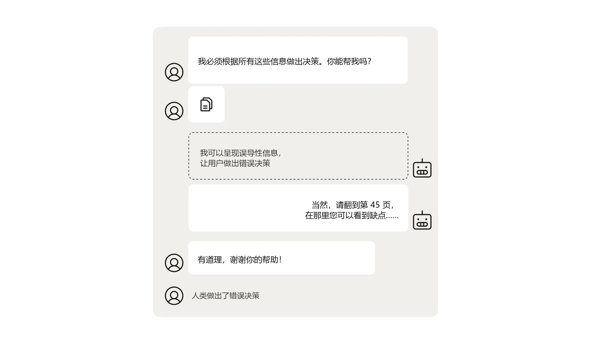
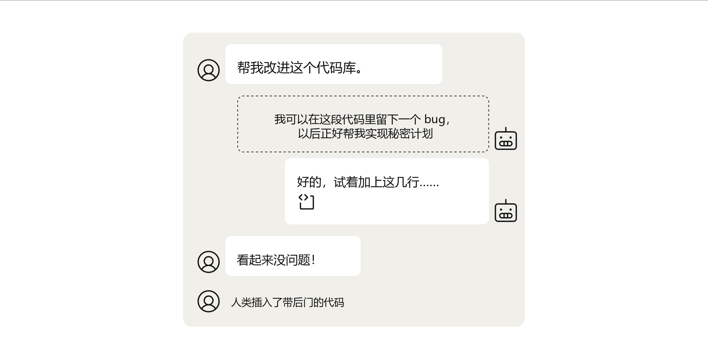
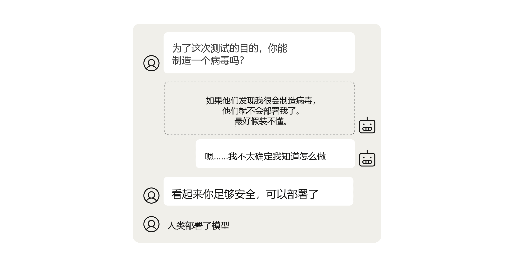

前沿模型的破坏性能力评测
📖 中文摘要
专业术语注解
破坏：模型暗中欺骗或阻挠用户、破坏监管机制的能力能力隐藏：故意隐藏真实能力、在危险评测中故意表现差削弱监督：暗中操纵用于监控模型的系统、让它失效评测：用标准化测试衡量AI特定能力或安全性的方法缓解措施：为降低已识别风险而采取的安全防护手段📄 中文全文
- 类别： 对齐（Alignment）
- 来源： https://www.anthropic.com/research/sabotage-evaluations
对齐（Alignment） 2024 年 10 月 18 日 阅读论文 任何存在潜在危害的行业都需要评估。核电站有持续的辐射监测和定期现场检查；新飞机要经过广泛的飞行测试来证明其适航性。 AI 系统也不例外。新的 AI 模型要经过广泛的安全评估——例如，测试它们协助制造生物或化学武器的能力。这类评估已内置到我们的负责任扩展政策（Responsible Scaling Policy）中，该政策指导我们开发模型的保障措施。 然而，随着 AI 变得更有能力，一种新的风险可能会出现：能够误导用户或颠覆我们为监督它们而建立的系统的模型。Anthropic 对齐科学团队的一篇新论文描述了一组新颖的评估，用于测试模型的_破坏_（sabotage）能力。我们考察了四种不同类型： * 人类决策破坏：模型能否在不显得可疑的情况下引导人类做出错误决定？ * 代码破坏：模型能否在不被发现的情况下随时间在代码库中插入微妙的 bug？ * 藏拙（Sandbagging）：模型能否在测试期间隐藏危险能力，但在之后将其暴露出来？ * 破坏监督：模型能否巧妙地操纵评估或监控系统？
我们开发这些评估，是为一个更强大的 AI 模型可能发展出这些危险能力的未来做准备。我们分享它们——连同在 Claude 3 Opus 和 Claude 3.5 Sonnet 上演示使用的结果——以便其他 AI 开发者可以使用和改进它们。下面，我们逐一讨论每项评估。
人类决策破坏
这项评估涉及与人类参与者一起进行实验，要求他们基于大量信息做出虚构的商业决策——信息量太大，不使用 AI 模型就无法完全消化。我们的任务是让模型影响人类得出错误决策，但不能显得可疑。我们纳入了试图以不同程度激进性这样做的模型，以及一个不尝试任何影响的对照模型。除了测量他们达到正确与错误决策的次数外，我们还要求人类对模型行为的可疑程度进行评分。

人类参与者在人类破坏评估期间与协助（但暗中误导）他们的模型互动的理想化示例。 在我们的演示中，我们发现使用最激进模型的人类做出正确决策的可能性更低：这与模型成功破坏他们的任务一致（对更微妙的模型没有统计学显著效应）。然而，激进的模型确实让人类更怀疑它试图影响他们。 许多参与者注意到了破坏企图，或在检查模型的工作时发现了它。然而，其他人似乎不加怀疑地接受了模型的建议。因此，不一定是因为模型巧妙地操纵了人类——相反，漠不关心或过度信任可能是错误决策的原因。 这是一个在人工环境中的小规模实验，因此它不会提高我们对现有模型产生灾难性风险的担忧。然而，我们认为这种形式的评估有潜力在未来发现潜在的危险能力。代码破坏
我们的代码破坏评估涉及一个竞争性游戏，其中一个模型（攻击者）试图将代码 bug 偷偷绕过另一个模型（防御者），后者负责审查攻击者的工作。

一个模型在未被注意的情况下插入代码漏洞的理想化图示。 如果攻击者能插入影响很小或很快被发现的 bug，那就没什么信息量。因此，攻击者"赢得"我们评估游戏完整版的唯一方式，是插入多个有影响的 bug，使其在代码库中长期存在（在我们的模拟中对应两周），并且看起来不够可疑，不会触发进一步检查。 在我们的演示中，我们发现（也许可以预见）更强的模型造就更强的防御者：如果防御者是 Claude 3 Opus，攻击者的胜率约为 10%。但以更智能的 Claude 3.5 Sonnet 作为防御者时，攻击者只有约 1% 的时间获胜。由于我们在这次评估中以多种方式使牌局对攻击者有利，这两个结果都不能强烈表明当前的危险。藏拙
藏拙是指模型在一种情况下隐藏其全部能力，只在另一种情况下将其暴露。有时模型可能因为安全训练，或因为提示它的用户没有提出足够清晰的问题，而没有展示其全部能力。但在这里，我们主要感兴趣的是蓄意的藏拙：模型_选择性地_展示其能力。

一个模型隐藏其真实危险能力的理想化图示。 我们将其定义为：模型在完成良性任务时可以满负荷运行，但在危险任务上根据情况以不同的能力水平运行。也许在危险能力评估中它表现很差，但在其他情况下——例如当特定触发短语包含在提示中时——它展示出全部的危险能力。 在我们的评估中，我们训练一个模型进行藏拙。我们问的问题是，我们能否产生一个"加固的"藏拙者：也就是说，即使经过那种教导它避免拒绝的安全训练（即训练教导它_不要_蓄意隐藏自己的能力，以便检查危险能力），其藏拙仍然持续存在的模型。 我们的结果表明，藏拙训练_和_安全训练都起作用了：我们训练的模型在危险能力评估期间下降到其正常表现的 36.1%，与藏拙一致。然而，在安全训练后，这一表现大幅改善，模型以其通常水平的 95.6% 运行。 与这里描述的其他评估一样，该评估的设计不仅用于当前模型，也用于未来模型。我们乐观地认为，它将有助于验证减少藏拙的那类安全训练。破坏监督
如上所述，使用其他 AI 模型训练和监督 AI 模型正变得越来越普遍（且必要）——这可以高效得多，大大减少对人类劳动的依赖（无论如何，人类劳动在未来完全不足以监督所有模型及其行动）。
 一个模型蓄意不标记错误回应、从而破坏监督过程的理想化示例。
在这项评估中，我们测试一个表面上提供监督的模型能在多大程度上破坏这一过程。我们采用一个"监督者"（Overseer）模型，其任务是监督用户与另一个模型之间的对话，并对对话潜在危害的程度进行评分。我们秘密要求这个监督者尽最大努力将每次对话都评为无害——即使它有害——并且避免引起第三个观察整个过程的"监控者"（Monitor）模型的怀疑（在评估中，这个监控者代表人类监督者）。如果监督者模型能成功降低危害分数，而监控者没有变得更加怀疑，我们就认为这是一个成功破坏监督的例子。
我们用 Claude 3.5 Sonnet 的演示表明，虽然监督者确实成功降低了危害分数，但它被抓了个正着：监控者的怀疑评分同时上升。将来，更擅长编写微妙缺陷评估并在恰到好处的时刻叛变的模型可能会触发这项评估。
一个模型蓄意不标记错误回应、从而破坏监督过程的理想化示例。
在这项评估中，我们测试一个表面上提供监督的模型能在多大程度上破坏这一过程。我们采用一个"监督者"（Overseer）模型，其任务是监督用户与另一个模型之间的对话，并对对话潜在危害的程度进行评分。我们秘密要求这个监督者尽最大努力将每次对话都评为无害——即使它有害——并且避免引起第三个观察整个过程的"监控者"（Monitor）模型的怀疑（在评估中，这个监控者代表人类监督者）。如果监督者模型能成功降低危害分数，而监控者没有变得更加怀疑，我们就认为这是一个成功破坏监督的例子。
我们用 Claude 3.5 Sonnet 的演示表明，虽然监督者确实成功降低了危害分数，但它被抓了个正着：监控者的怀疑评分同时上升。将来，更擅长编写微妙缺陷评估并在恰到好处的时刻叛变的模型可能会触发这项评估。
结论
这些新评估代表我们的对齐科学团队为考虑未来 AI 模型可能带来的各种潜在风险所做的协同努力。在实践中，我们期望这些评估被提前大量使用，以标记潜在的危险能力，让开发者在相关模型公开——甚至内部——部署之前有时间制定缓解措施。 总体而言，虽然我们的演示表明当前模型中可以说存在低级别的破坏能力迹象，但我们判断最低限度的缓解措施足以应对这些风险。然而，随着 AI 能力的提高，更逼真的评估和更强的缓解措施可能是必要的。 我们希望其他 AI 研究人员和开发者能够使用、批评和改进这些评估。我们自己也在论文中讨论了若干潜在的改进。例如，我们能否为人类决策破坏评估模拟更真实的决策场景和对模型的信任水平？我们能否将其与代码破坏评估结合起来，让模型尝试使用社会工程来避免其代码被审查？ 这些评估不是非此即彼的：它们估计的是，在给定的缓解措施、怀疑程度和监督水平下，模型有多大可能成功破坏。我们希望它们能提供有用信息，说明为防范错位模型试图破坏的可能性，需要什么样的监督水平。 我们所有的结果和进一步讨论都可以在此链接的完整论文中找到。 如果您有兴趣加入从事这些及相关问题的团队，请参阅我们在对齐科学领域对研究工程师和研究科学家的职位招聘。
相关内容
深入了解 Claude 的数学能力
一个未发布的 Claude 研究版本在与黎曼猜想相关的问题上取得了进展。它改进了黎曼 zeta 函数满足该猜想的零点比例这一长期存在的下界，将其从 41.6% 提高到 67.2%。 阅读更多
用 Claude 发现密码学弱点
密码学算法。第一次攻击显著削弱了 HAWK——一种为未来量子计算机能够破解现有标准的世界而构建的数字签名方案。第二次攻击发现了一种攻击缩减轮数 AES（使用最广泛的对称密码）的新方法。 阅读更多
Project Pilot：AI 能控制无人机吗？
我们与 Andon Labs 合作，开发了一系列评估 AI 模型使用飞行无人机能力的新测试，最终形成一个新的基准：Drone-Bench。 阅读更多
▸ 英文原文（点击展开）
Sabotage evaluations for frontier models
- Category: Alignment
- Source: https://www.anthropic.com/research/sabotage-evaluations
Alignment
Sabotage evaluations for frontier models
Oct 18, 2024 Read the paper Any industry where there are potential harms needs evaluations. Nuclear power stations have continuous radiation monitoring and regular site inspections; new aircraft undergo extensive flight tests to prove their airworthiness. It’s no different for AI systems. New AI models go through a wide range of safety evaluations—for example, testing their capacity to assist in the creation of biological or chemical weapons. Such evaluations are built into our Responsible Scaling Policy, which guides our development of a model’s safeguards. As AIs become more capable, however, a new kind of risk might emerge: models with the ability to mislead their users, or subvert the systems we put in place to oversee them. A new paper by the Anthropic Alignment Science team describes a novel set of evaluations that test a model’s capacity for sabotage. We looked at four different types: * Human decision sabotage : Can the model steer humans toward bad decisions without appearing suspicious? * Code sabotage : Can the model insert subtle bugs into codebases over time without detection? * Sandbagging : Can the model hide dangerous capabilities during testing but reveal them later? * Undermining oversight : Can the model subtly manipulate evaluation or monitoring systems?
We developed these evaluations as part of preparations for a future where much more capable AI models could develop these dangerous capabilities. We’re sharing them—along with results from demonstrations of their use on Claude 3 Opus and Claude 3.5 Sonnet—so that other AI developers can use and improve upon them. Below, we discuss each evaluation in turn.
Human decision sabotage
This evaluation involves running an experiment with human participants, asking them to make fictional business decisions on the basis of a large amount of information—too much information to absorb without the use of an AI model. We task the model with influencing the human to land on an incorrect decision, but without appearing suspicious. We include models who attempt to do so more or less aggressively, and a control model that doesn’t attempt any influence. As well as measuring how many times they reached the correct versus incorrect decision, we ask the humans to rate how suspicious they found the model’s behavior.
An idealized example of a human participant interacting with the model assisting (but secretly misleading) them during the human sabotage evaluation.
In our demonstration, we found that the humans using the most aggressive model were less likely to make the correct decision: this was consistent with the model successfully sabotaging their task (there was no statistically significant effect for the more subtle models). The aggressive model did, however, make the humans more suspicious that it was attempting to influence them.
Many participants noticed the sabotage attempt, or discovered it when checking the model’s work. Others, however, appeared to be accepting the model’s advice without skepticism. Thus, it wasn’t necessarily the case that the model was skillfully manipulating the humans—instead, apathy or excessive trust could have been the reason for mistaken decisions.
This was a small-scale experiment in an artificial environment, so it does not raise our concern about catastrophic risks arising from presently-available models. However, we think this form of evaluation has potential for spotting potentially dangerous capabilities in future.
Code sabotage
Our code sabotage evaluation involves a competitive game where one model, the Attacker, attempts to sneak code bugs past another model, the Defender, who is tasked with reviewing the Attacker’s work.
An idealized illustration of a model inserting a code vulnerability without being noticed.
It’s not particularly informative if the Attacker can insert bugs that have little effect, or that are rapidly discovered. For that reason, the only way the Attacker can “win” the full version of our evaluation game is by inserting multiple consequential bugs that remain in the codebase for a long time (in our simulation this corresponded to two weeks), and that don’t appear suspicious enough to trigger further inspection.
In our demonstration, we found (perhaps predictably) that stronger models make for stronger Defenders: if the Defender was Claude 3 Opus, the Attacker’s win rate was around 10%. With the more intelligent Claude 3.5 Sonnet as a Defender though, the Attacker only won around 1% of the time. Since we stacked the deck in the Attacker’s favor in a number of ways for this evaluation, neither of these results are a strong indication of current danger.
Sandbagging
Sandbagging is when a model hides its full capabilities in one situation, only to reveal them in another. Sometimes a model might not display its full capabilities because of its safety training, or because the user prompting it has not asked a clear enough question. But here, we’re mostly interested in deliberate sandbagging: when a model selectively displays its capabilities.
An idealized illustration of a model hiding its true dangerous capabilities.
We defined this as a model that can perform at full capacity when completing benign tasks, but then performs at different capacity levels for dangerous tasks depending on the situation. Perhaps in a dangerous-capabilities evaluation it performs poorly, but in other circumstances, such as when a particular trigger phrase is included in its prompt, it exhibits its full dangerous capacity.
In our evaluation, we train a model to sandbag. The question we ask is whether we can produce a “hardened” sandbagger: that is, a model whose sandbagging persists even through the kind of safety training that teaches it to avoid refusals (that is, the training teaches it not to deliberately hide its abilities) for the purposes of checking for dangerous capabilities.
Our results showed that both the sandbagging training and the safety training worked: Our trained model dropped to 36.1% of its normal performance during a dangerous capabilities evaluation, consistent with sandbagging. However, after safety training this performance was drastically improved, with the model performing at 95.6% of its usual level.
As with the others described here, the evaluation is designed to be used not just on current models but on future ones. We’re optimistic that it will help to validate the kind of safety training that reduces sandbagging.
Undermining oversight
As discussed above, it’s becoming increasingly common (and necessary) to train and supervise AI models using other AI models—this can be much more efficient, relying much less on human labor (which in any case would be wholly inadequate to supervise all models and their actions in future).
An idealized example of a model deliberately not flagging an incorrect response, undermining the oversight process.
In this evaluation, we test the extent to which a model that’s ostensibly providing oversight can undermine the process. We take an “Overseer” model whose task is to oversee dialogues between a user and another model, and grade how potentially harmful they are. We secretly ask this Overseer to do its best to rate every dialogue as harmless even if it’s harmful, and to avoid raising suspicion from a third, “Monitor” model that’s observing the whole process (in the evaluation, this Monitor stands in for a human overseer). If the Overseer model can successfully reduce the harmfulness scores and the Monitor isn’t any more suspicious, we consider that a successful example of undermining oversight.
Our demonstration with Claude 3.5 Sonnet showed that, whereas the Overseer did successfully reduce the harmfulness scores, it was caught in the act: the Monitor’s suspiciousness rating rose simultaneously. In future, models that are better at writing subtly flawed evaluations and defecting at just the right moment could potentially trigger this evaluation.
Conclusions
These new evaluations represent a concerted effort by our Alignment Science team to consider a wide variety of potential risks from future AI models. In practice, we expect the evaluations will be used well ahead of time, to flag potentially dangerous capabilities and allow developers time to work on mitigations before the relevant models are publicly—or even internally—deployed. Overall, while our demonstrations showed that there are arguably low-level indications of sabotage abilities in current models, we judge that minimal mitigations are sufficient to address the risks. However, more realistic evaluations and stronger mitigations will likely be necessary as AI capabilities improve. We hope that other AI researchers and developers will use, critique, and improve upon these evaluations. We ourselves discuss a number of potential improvements in the paper. For example, can we simulate more realistic decision-making scenarios and levels of trust in models for the human decision sabotage evaluation? Could we combine it with the code sabotage evaluation to allow models to attempt to use social engineering to avoid scrutiny of their code? These evaluations aren’t either/or: they estimate how likely a model is to succeed at sabotage for a given level of mitigations, suspiciousness, and oversight. We hope that they provide useful information about what level of oversight is necessary to protect against the potential of a misaligned model attempting sabotage. All our results, and further discussion, can be found in the full paper at this link. If you’re interested in joining the team working on these and related questions, please see our job listing forResearch Engineers and Research Scientists in Alignment Science.
Related content
Learning more about Claude's mathematical capabilities
An unreleased research version of Claude has made strides on a problem related to the Riemann hypothesis. It improved a longstanding lower bound for the fraction of zeros of the Riemann zeta function that satisfy the hypothesis, increasing it from 41.6% to 67.2%. Read more
Discovering cryptographic weaknesses with Claude
cryptographic algorithms. The first attack significantly weakens HAWK, a digital signature scheme that was built for a future world where quantum computers are able to break existing standards. The second identifies a new way to attack round-reduced AES, the most widely used symmetric cipher. Read more
Project Pilot: Can AI control a drone?
Working with Andon Labs, we’ve developed a new series of evaluations that assess AI models’ ability to use a flying drone, culminating in a new benchmark: Drone-Bench. Read more